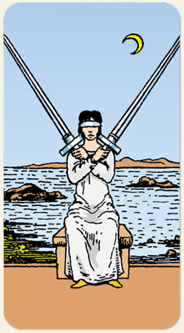

Dois de Espadas
O equilíbrio precário, a indecisão e a trégua intelectual. O estado de suspensão entre dois caminhos ou pensamentos conflitantes, a mente que protege o coração para evitar uma escolha dolorosa. O impasse, o bloqueio emocional e a necessidade de introspecção antes de tomar uma decisão definitiva.
Positivo: Chegar a um consenso, decisão, diplomacia, duelo honroso, concorrência sadia.
Negativo: Hesitar, duvidar, se omitir, abster-se da guerra, dificuldade de trégua, ideias opostas e desarmônicas.
Símbolos: Olhos Vendados, Banco de Pedra, Ilhas, Mar Calmo, Lua Crescente.
Cores: Azul, Amarelo, Cinza (Branco).